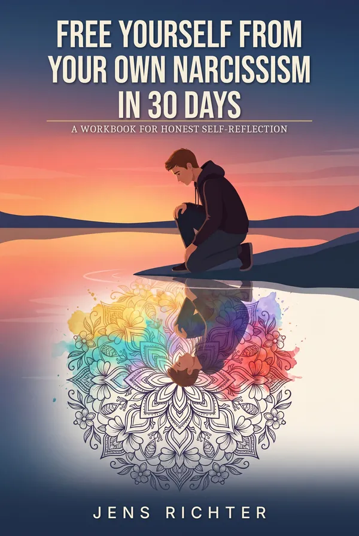

Personal Growth
Get to know yourself, one step at a time.

Free Yourself from Your Own Narcissism in 30 DaysSpot your own narcissistic traits and work on them, one day and one task at a time.Get to know yourself, one step at a time.

Free Yourself from Your Own Narcissism in 30 DaysSpot your own narcissistic traits and work on them, one day and one task at a time.